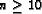
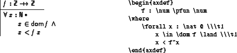
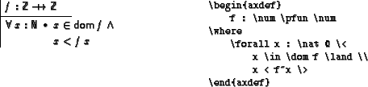
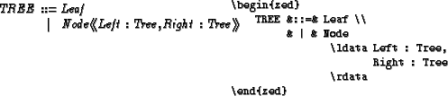
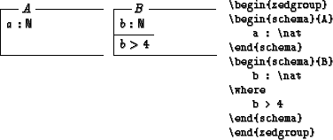
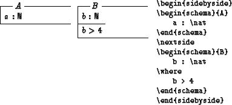

There are two ways of setting indents. You can either use the
\tn (put n in braces, if )
to insert a space of
n \zedtabs or use the \< and \>
markers for relative indentation:


Both kind of markups are ignored by the type-checker.
A zed environment also introduces a tabular, thus definitions can be
aligned:

The environment syntax known from Spivey-Z is just an alias
for the zed environment.
Vertical space between lines can be introduced by using \also,
\Also, and \ALSO instead of \\.
A vertical space of \jot, 2\jot, resp.
4\jot is inserted, where \jot=3pt by default.
For small schemata and definitions, it is usually desirable to set
them side by side. The zeta style introduces the zedgroup
environment that sets paragraphs automatically side by side, if they fit.

Line breaks between paragraphs can be forced with \\. In
order to produce a regular layout, schemata in the same row are set
with the same height and there is a limited predefined set of possible
paragraph width, i.e. full width, half width, a third, and a quarter.
zedgroup environments can not be nested. Note that due the
implementation of zedgroup, errors in the LATEX code may
lead to error messages with inaccurate positions.
For downwards compatibility with other styles, there is also a
sidebyside environment. You have to specify explicitly with
\nextside which portions are supposed to be set side by side.
If more than two columns are required, the number of columns has to be
specified, e.g. \begin{sidebyside}[3] for three columns.

oxsz: use oxsz charset (you need to
have an installation of this font, which originates from the fUZZ package).
If not given, special Z symbols will be simulated using existing
symbols (as in the oz style).
The layout of the Z boxes and formulae can be manipulated by various TEX parameters:
\zedindent: left indent of Z paragraphs.
\zedbeforeskip: space before Z paragraphs.
\zedafterskip: space after Z paragraphs.
\zedtab: horizontal space that is introduced by \t1
\zedleftsep: horizontal space between left vertical
line of schemata and axiomatic definitions and the beginning of
declarations and predicates.
\zeddeclpartskip: vertical space between top horizontal
line of a schema and the declarations.
\zedlinethickness: thickness of schema and axiomatic
definition box's lines.